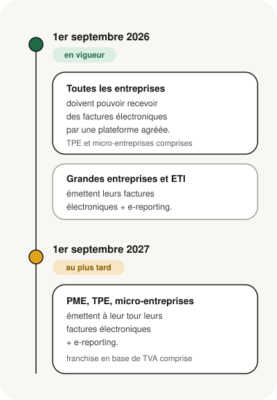
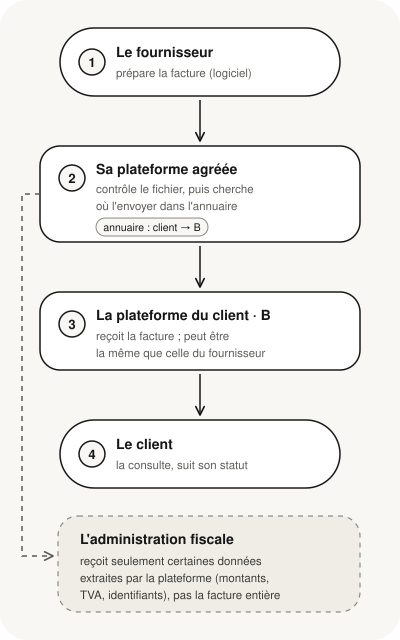

Depuis le 1er septembre 2026, toutes les entreprises, quelle que soit leur taille, doivent pouvoir recevoir des factures électroniques par l'intermédiaire d'une plateforme agréée. Les TPE, PME et micro-entreprises devront aussi les émettre au plus tard le 1er septembre 2027. Une facture en PDF envoyée par email n'est pas une facture électronique au sens de la réforme : il s'agit d'un fichier de données transmis de plateforme à plateforme.
- Recevoir : obligatoire pour toutes les entreprises depuis le 1er septembre 2026, ce qui suppose d'avoir choisi une plateforme agréée.
- Émettre : obligatoire pour les TPE, PME et micro-entreprises au plus tard le 1er septembre 2027.
- Les micro-entrepreneurs en franchise en base de TVA sont concernés, en réception comme en émission.
- Les ventes aux particuliers et les opérations avec l'étranger ne passent pas par la facture électronique, mais par une transmission de données appelée e-reporting.
- Votre logiciel actuel peut rester utilisable, à condition d'être relié à une plateforme agréée.
Ce qui est en vigueur depuis le 1er septembre 2026
La réforme a démarré pour tout le monde, y compris pour les plus petites entreprises. Votre fournisseur d'électricité, votre opérateur téléphonique ou internet, votre fournisseur de matériel sont souvent de grandes entreprises : depuis septembre 2026, elles doivent émettre leurs factures sous forme électronique. Vous devez donc être en mesure de les recevoir.
Pour cela, l'administration fiscale considère que le choix d'une plateforme agréée est « indispensable ». C'est cette plateforme qui informe l'administration de votre choix, en vous inscrivant dans l'annuaire de la réforme.
Cette obligation de réception vaut même si votre activité ne facture pas de TVA. L'administration cite l'exemple d'un médecin généraliste ou d'un ostéopathe : il doit avoir choisi une plateforme pour recevoir les factures de ses fournisseurs d'énergie ou d'accès à internet.
La DGFiP (Direction générale des Finances publiques) a annoncé une approche souple pendant la phase de démarrage : pas de sanction pour les entreprises qui rencontrent des difficultés mais sont engagées dans une « trajectoire sérieuse de mise en conformité ». Elle précise que cette approche « ne constitue ni un report ni une suspension de l'obligation ». Les sanctions prévues par les textes restent applicables à l'inertie ou au refus d'entrer dans le dispositif.
Une facture électronique, ce n'est pas un PDF envoyé par email
On parle depuis longtemps de « facture dématérialisée » : un PDF produit par un logiciel, puis envoyé par email. Avec la réforme, ce n'est plus suffisant entre professionnels. L'administration le dit sans détour : « un PDF simple envoyé par voie électronique n'est pas une facture électronique au sens du dispositif ».
Une facture électronique doit réunir trois conditions :
- respecter une forme électronique normée, c'est-à-dire un format de fichier défini ;
- contenir certaines informations sous forme de données structurées : chaque information (numéro, montant, taux de TVA…) est rangée à un emplacement précis, lisible directement par un logiciel ;
- être transmise par l'intermédiaire d'une plateforme agréée, et non plus directement du fournisseur à son client.
Une image du quotidien aide à comprendre. Un PDF ressemble à une lettre manuscrite : une personne la lit sans difficulté, mais un logiciel doit deviner où se trouve le montant. Une facture électronique ressemble plutôt à un formulaire officiel rempli case par case, et confié à un service postal agréé, qui sait à quel guichet le remettre.
Atelier Martin, une petite entreprise fictive, réalise une prestation de 1 000 € hors taxes pour une société cliente. Avec 20 % de TVA, la facture s'élève à 1 200 €. Aujourd'hui, Atelier Martin envoie un PDF par email. Au plus tard en septembre 2027, la même facture devra partir de sa plateforme agréée vers celle de son client, sous forme de fichier de données.
Les règles de fond ne changent pas : une facture se fait toujours au moment de la vente ou de la prestation, et contient toujours les mentions obligatoires habituelles. C'est la manière de la transmettre qui change.
Le calendrier : recevoir dès 2026, émettre au plus tard en 2027
Le calendrier dépend de la taille de votre entreprise pour l'émission, mais pas pour la réception.

| Taille de l'entreprise | Réception | Émission |
|---|---|---|
| Grandes entreprises et ETI | depuis le 1er septembre 2026 | depuis le 1er septembre 2026 |
| PME, TPE et micro-entreprises | depuis le 1er septembre 2026 | au plus tard le 1er septembre 2027 |
Une ETI (entreprise de taille intermédiaire) compte, selon l'administration, entre 250 et 5 000 salariés, avec des seuils de chiffre d'affaires et de bilan. Une micro-entreprise, au sens de cette réforme, compte moins de 10 salariés et réalise moins de 2 millions d'euros de chiffre d'affaires ou de total de bilan.
Deux précisions utiles pour une TPE :
- Vous pouvez émettre plus tôt, de façon volontaire, avant septembre 2027. Tant que l'obligation ne s'applique pas à vous, vous pouvez envoyer tout ou partie de vos factures sous la forme de votre choix.
- Ce n'est pas à vous de vérifier si votre fournisseur doit déjà émettre en électronique. C'est à lui de le savoir. Vous, vous devez simplement pouvoir recevoir.
Qui est concerné ?
La facture électronique s'applique aux ventes et prestations réalisées entre entreprises assujetties à la TVA établies en France. Être assujetti à la TVA signifie exercer une activité économique indépendante de façon habituelle, même si l'on ne facture pas de TVA.
Micro-entreprises et franchise en base de TVA
Les micro-entrepreneurs et auto-entrepreneurs en franchise en base de TVA (ils ne facturent pas de TVA, sous un certain chiffre d'affaires) sont concernés. L'administration les qualifie d'« assujettis non redevables » : ils doivent recevoir et émettre des factures électroniques selon le même calendrier que les autres TPE. Leurs factures continuent de porter la mention « TVA non applicable, article 293 B du CGI ».
Clients particuliers et clients à l'étranger : le e-reporting
Si votre client est un particulier, ou une entreprise établie hors de France, vous n'émettez pas de facture électronique au sens de la réforme. En revanche, certaines données de ces opérations doivent être transmises à l'administration : c'est le e-reporting, qui suit le même calendrier que la facture électronique.
Les opérations qui n'entrent pas dans le champ de la TVA ne sont soumises ni à la facture électronique, ni au e-reporting. Les documents qui ne sont pas des factures (devis, bons de commande…) ne sont pas concernés non plus.
Le trajet d'une facture électronique
Le changement principal porte sur le chemin que suit la facture. Elle ne va plus directement du fournisseur au client : elle passe par les plateformes agréées choisies par chacun.

Trois points à retenir sur ce trajet :
- Le choix de la plateforme est libre. Vous pouvez en choisir une ou plusieurs, utiliser la même pour émettre et recevoir ou deux différentes, et en changer à tout moment. Vous signez un accord avec la plateforme désignée pour la réception.
- Votre logiciel peut rester en place. S'il est une « solution compatible », c'est-à-dire s'il propose les fonctions attendues par la réforme et s'il est connecté à au moins une plateforme agréée, vous pouvez continuer à facturer avec lui.
- L'administration ne reçoit pas toute la facture. La plateforme du fournisseur en extrait seulement les données utiles, notamment pour préremplir à terme les déclarations de TVA.
Chaque facture a aussi un statut, que le fournisseur comme le client peuvent suivre sur leur plateforme : on parle du « cycle de vie » de la facture. Il permet par exemple de savoir si une facture a été reçue, refusée par le client ou rejetée par une plateforme.
Les quatre nouvelles mentions sur les factures
Les mentions obligatoires habituelles restent les mêmes. Le décret du 7 octobre 2022 en ajoute quatre, rendues obligatoires à compter du 1er septembre 2026 :
| Mention | Ce qu'elle signifie |
|---|---|
| SIREN du client | le numéro d'identification à 9 chiffres de l'entreprise cliente |
| Catégorie de l'opération | livraison de biens, prestation de services, ou les deux |
| Option pour le paiement de la TVA d'après les débits | à indiquer seulement si votre entreprise a choisi cette option |
| Adresse de livraison des biens | seulement si elle diffère de l'adresse de facturation |
Pour Atelier Martin, cela signifie concrètement : connaître le SIREN de son client, et indiquer sur la facture qu'il s'agit d'une prestation de services.
Les erreurs fréquentes
- Penser qu'il n'y a rien à faire avant 2027. L'émission peut attendre 2027 pour une TPE, mais la réception est déjà obligatoire, et elle suppose d'avoir choisi une plateforme.
- Croire qu'un PDF par email suffit. Entre professionnels établis en France, ce n'est pas une facture électronique au sens de la réforme.
- Écarter une facture parce qu'elle arrive encore en PDF. Pendant le démarrage, l'administration précise qu'une facture reçue par un canal habituel (email, PDF, papier) ne doit pas être écartée pour cette seule raison si elle correspond à une opération réelle.
- Confondre rejet et refus. Un rejet vient d'une plateforme, qui a détecté un problème technique (format, donnée manquante, destinataire introuvable). Un refus vient du client, et doit être motivé. Ce ne sont pas les mêmes démarches.
- Renvoyer la même facture par plusieurs canaux sans précaution. Un double envoi mal suivi peut provoquer un double paiement ou une double comptabilisation. L'administration recommande de s'appuyer sur les statuts avant d'envoyer un double.
- Croire que la franchise en base dispense de la réforme. Elle dispense de facturer la TVA, pas de recevoir ni d'émettre des factures électroniques.
Ce que vous pouvez faire dès maintenant
Ces vérifications ne demandent aucune compétence technique :
- Vérifier que vous avez choisi une plateforme de réception. Si votre banque, votre logiciel ou votre expert-comptable vous en propose une, vérifiez qu'elle figure dans la liste officielle des plateformes agréées, publiée sur impots.gouv.fr.
- Interroger l'éditeur de votre logiciel de facturation : est-il connecté à une plateforme agréée ? Quand pourra-t-il émettre des factures électroniques ?
- Rassembler le SIREN de vos clients professionnels, qui devient une mention obligatoire.
- Faire le test proposé par l'administration sur impots.gouv.fr, qui indique à quelles obligations votre entreprise est soumise.
- Garder une trace de vos démarches et des difficultés rencontrées. Pendant le démarrage, l'administration tient compte des difficultés réelles et documentées.
Si vous n'avez pas de logiciel de facturation, les plateformes agréées proposent elles-mêmes des moyens de créer vos factures.
Cet article présente le cadre général. Le traitement fiscal d'une opération particulière (TVA applicable, cas d'exonération, choix de l'option sur les débits) relève de votre expert-comptable ou de l'administration fiscale.
La réception des factures électroniques est obligatoire pour toutes les entreprises depuis le 1er septembre 2026 ; l'émission le sera pour les TPE au plus tard le 1er septembre 2027. La première décision à prendre est le choix d'une plateforme agréée. La seconde est de vérifier que votre logiciel de facturation saura passer par elle.
Sources
- DGFiP — Foire aux questions « Je découvre la facturation électronique » (version du 1er septembre 2026)
- DGFiP — Fiche 1 : que va-t-il se passer pour mon entreprise ? (juin 2026)
- DGFiP — Fiche 3 : à partir de quelle date mon entreprise doit-elle être prête ? (octobre 2026)
- DGFiP — Guide pratique de démarrage au 1er septembre 2026 (juillet 2026)
- DGFiP — Les plateformes agréées
- impots.gouv.fr — Franchisé en base, micro-entrepreneur ou auto-entrepreneur : suis-je concerné ?
- impots.gouv.fr — Liste des plateformes agréées
- impots.gouv.fr — La facturation électronique : qu'est-ce que ça change pour moi ? (test)